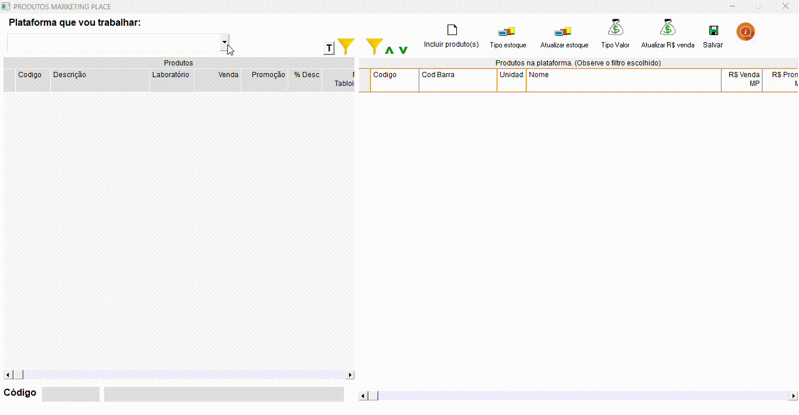

Marketplace
+Lançamento de produtos
- A ferramenta separa em dois lados, esquerdo são os produtos cadastrados no sistema dos quais serão lançados no lado direito, que são os que vão ser disponibilizados na plataforma.
- Utilize o filtro da esquerda para selecionar os produtos dos quais deseja visualizar e selecionar o tipo de controle de estoque e preço >

+Tipos de preço
- Tipos de Preços: Preço controlado MANUALMENTE: Você informa o valor (campo R$ Venda) que estará disponível, independente do valor da loja. Preço controlado em % (Percentual): Você informa o percentual (campo Ref R$ MP), que será acrescido ao valor de venda do sistema, formando assim o novo valor de venda para o MP escolhido; Exemplo: Você informa que deseja acrescentar 10% para o MP escolhido. Assim, caso seu valor de venda seja R$ 10,00, o sistema calculará mais 10%. O valor de venda final será R$ 11,00. Sempre somar o valor de X ao preço de venda: Você informa (campo Ref R$ MP) o valor (em reais) que será somado ao preço de venda do sistema. Preço de venda com desconto em (%) percentual informado: Você informa (campo Ref R$ MP) o percentual de desconto que deseja aplicar ao preço de venda do sistema. Preço de venda com desconto do cadastro: O sistema utiliza como base o preço de venda e aplica o desconto configurado no cadastro, formando o novo preço de venda para o MP escolhido. R$ promoção ou preço de venda: O sistema prioriza o preço de promoção. Caso ele esteja com valor igual a ZERO, será utilizado o preço de venda. R$ tabloide ou preço de venda: O sistema prioriza o preço de tabloide. Caso ele esteja com valor igual a ZERO, será utilizado o preço de venda. >

+Tipos de estoque
- Tipos de estoque: Estoque Controlado MANUALMENTE: você informa (Vai p/MP) a quantidade que deseja disponibilizar na plataforma Estoque Controlado em % (Percentual) você informa (Vai p/MP) em porcentagem a quantidade do seu estoque de seja disponibilizar, por exemplo, se tiver 10 anadores e informar 50%, na plataforma está disponível 5 anadores para venda. Se houver saldo no sistema, disponibilizar sempre: você informa (Vai p/MP) sempre o valor que deseja disponibilizar do produto, por exemplo, se tiver 15 em estoque e informa para disponibilizar sempre 10, na plataforma está sempre 10 unidades, caso o saldo seja inferior ele informa o valor em questão. 3 | Agrupado, Controlado em % (Percentual): Agrupado, Se houver saldo no sistema disp. sempre: